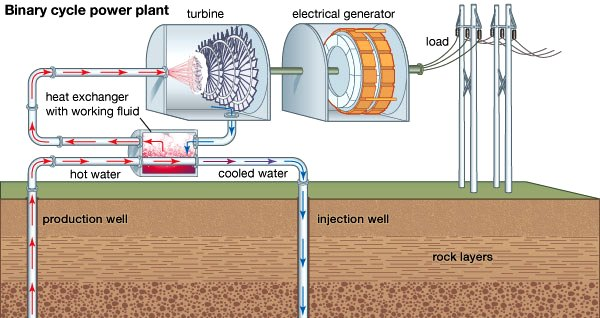

Geothermal Energy

Geothermal power production in Eastern Myanmar will localize electrical production, shortening delivery distances reaching the end user, with secondary agricultural processing uses speeding rural development. Villages will experience socio-economic improvement of rural productivity and income as well as enhancement of farmers’ skills and capabilities in adopting new technologies and managing bio-resources. Rural & Livelihood Development is a key building block in the Central Government’s national development plan which will catapult the country’s agriculture industry into the Food Basket of Asia within two decades. These ambitious plans will require tenacity and a steady flow of investments to upgrade machinery, seed stock, fertilizer input, crop handling & storage methods, refrigeration, secondary processing & dehydrating. The bio-village conceptualized by Hishamuddin Koh envisions active participation by farmers/villages in low income and productivity which can be brought out of poverty if villages have significant acreages of land under crop or animal production for food and/or biofuels and access to reliable electricity even at minimal levels for processing bulk products higher up the value chain. The proposed project must be cost-effective and capable of promoting self-reliance among the farming community in the pilot village or subsequent close proximity villages. There must be a need for agronomic and technical inputs to enhance greater productivity with a model having a “multiplier effect” for subsequent similar development in other villages. Technical (including training) is also a key component of self-reliability training to get villages away from continually needing financial support due to poverty. Current development plans or bio village concepts are meaningless unless there is a reliable power supply. So the next question to be raised is: How will Geothermal Power Stations and rural livelihood development integrate and co-benefit each other? 2015 Photius.com electricity consumption per capita rankings put Myanmar at 109.3 kW and USA at 12,185 kW. Myanmar consumption is low, not because citizens do not want to use electricity, but because it’s simply not available.